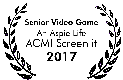
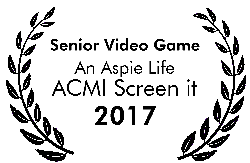

An Aspie Life Beginnings is the prequel to An Aspie Life. Set 9 years before the OG game. Telling the story of how Thales and Aislin first met. The An Aspie Life series is all about autism and trying to recreate what it is like to live with autism. This is done through the innovative mechanics, gameplay, style and sound. For the prequel, you will be able to choose between 3 characters to see their perspective on the world. The story in more detail“Winter, it’s cold… very cold. The coldest on record! Some say that winter is the season of death. I guess that’s true, but the white blanket that falls on the world. Is a canvas waiting to be carved. This town is full of story’s, A towns lifeline is its populating. There are mystery’s waiting to be solved, broken dreams and fortunes waiting to be resurrected. And in the middle of it all… was us. 3 kids who stumbled into an adventure we never saw coming.” - Aislin


Technology, Humanity... Can never be together. One must take the other. Take something from each to maintain peace. Take the blood, take the knowledge. Replace it with machines and chips.... those who don't are a threat. Knowledge is dangerous after all.
Autism cannot be seen, it cannot be heard, and it cannot be experienced by people unless you have it. You cannot describe autism because it is so complex, and how do you explain your life if you don’t know what ‘real’ life is like? So how can the public’s opinion on autism change? By allowing people to experience what it is like to be an Aspie (Asperger’s) through a game. “An Aspie Life” brings to life the hard and commonly misunderstood world of autism. By having players play out the life of an autistic person, their actions in the game will have to adapt to how an autistic person sees the world in an ordinary everyday life. The game is hopefully going to change the public perception or at least make people realise, what autism “really” is.
 

A vital piece of the Time ripper is being moved between districts by the XSon’s. Jax fox and Elsa Barns of the C-point 21 Check Point Outpost. Are waiting for Transport one to check because of its cargo. Which is the time Ripper component. When Transport one has not contacted C-point 21 for an update... what's wrong?
In the year 2098, a revolutionary piece of technology was invented, the Time Ripper. The Time Ripper was a time machine that was going to change the world in unmeasurable ways. Just as the Time Ripper’s development had finished the terrorist army known as the QUEllA stole the Time Ripper. With the QUEllA now having time on their side, they could change anything and everything at their will. In response to this emergency the TRIP Task Force was created to try and recover the Time Ripper and prevent any changes occurring to time. Over the years more and more people joined the fight against the QUEllA and eventually the TRIP Task Force lead by Ace and Sally managed to destroy the Time Ripper. But as Ace destroyed the Time Ripper, he was sucked into a time portal it created. Dark Hours 2 follows the story of Ace and Sally as they try and figure out how the QUEllA survived the events that almost wiped out time itself and put a stop to them once and for all. Throughout the 5 chapters Ace and Sally go from busy cities to windy, snowy lands. From the Great Fire of London and to the QUEllA under water base to try and finish what they set out to do from the very beginning.